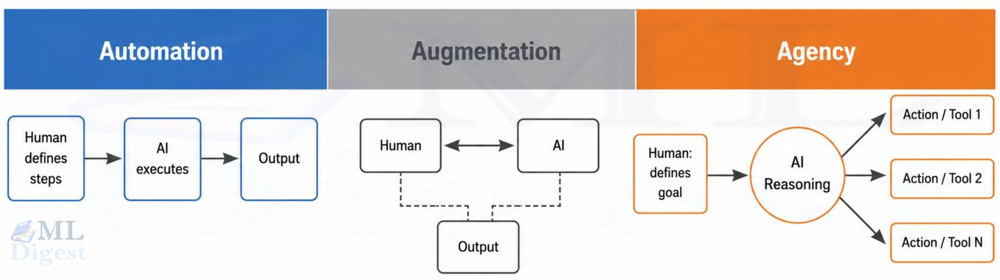
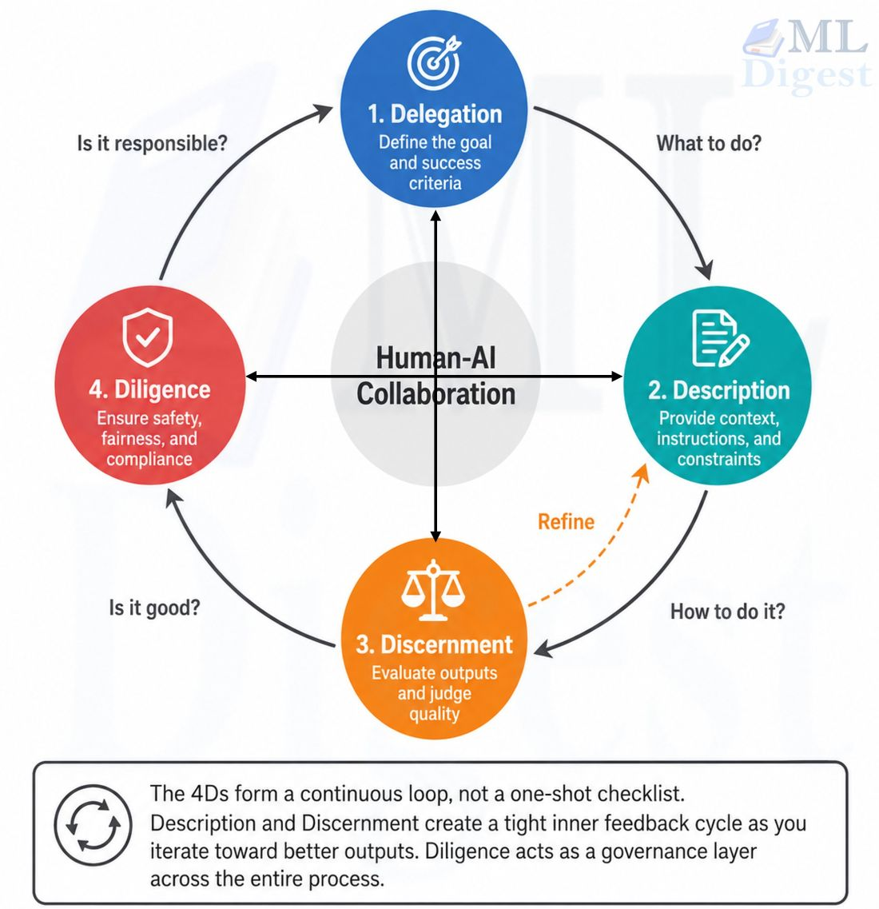

AI Literacy and Implementation at VF
Department of Plant Breeding — VF Report
This report is delivered as an output from the assignment to strengthen the competence at the Department of Plant Breeding regarding AI tools in teaching and research (SLU.ltv.2026.1.1-25).
Introduction
Aims of the Report
This report aims to address essential skills required to implement LLM’s in research and teaching. It aims to address the AI fluency and literacy requirements; the ethical responsibilities users of AI must be aware of in a platform agnostic manner.
This report does not aim to benchmark any major LLM’s due to the everchanging nature of the field. There are several benchmarking platforms that specialise in this, and these are updated frequently. This is also to ensure that the changing legal landscape surrounding the implementation of AI and LLM’s in research do not nullify this report.
Uses and Cautions
Currently, the use of LLM’s can be classed into 3 categories1:
- Automation: AI completes specific tasks based on user instructions (i.e. in response to a prompt). This is to improve the efficacy of repetitive, time-, or data-intensive tasks. Examples of this include extracting gene names and functional annotations from a stack of PDFs, converting recorded interviews into searchable transcripts, or reformatting a messy field-data spreadsheet into a standardised layout ready for analysis
- Augmentation: AI is used a collaborative partner in tasks of creative thinking and task execution, and relies on dynamic interaction between the human and AI. Examples of this include iteratively refining the wording of a grant application’s aims section, debugging an R or Python script for a statistical analysis, or brainstorming alternative experimental designs with the AI acting as a sounding board
- Agency: the user configures AI to work independently by establishing it´s knowledge and behavioural patterns rather than just acting on specific instructions. Examples can include a chatbot answering students’ routine course-logistics questions outside office hours, a writing tutor giving students iterative feedback on lab reports, or an agent configured to monitor published literature in a research group’s field and flag relevant papers.

There are several areas of concern relating to the widespread use and implementation of AI in society. Over-reliance on AI may lead to skill erosion.3 While the erosion of obsolete skills is crucial for the adoption of new technologies, the end-user of the AI systems remains responsible for the output that is distributed. It has been shown that users over-rely on information that is generated by algorithms.4 If the user’s trust in the advisor is high, the reliance on the advice is higher, leading to decisions that are contrary to contextual information. This leads to users favouring fast and easy solutions to cognitively demanding solutions.5
We need to be aware that algorithms may be prone to information bias, or present results based on a subset of available perspectives that are included in training data, just like humans. We should therefore be very cautious with treating the output as being objectively truthful or with full coverage.
It is important to be aware of these potential problems so that users are able to mitigate the negative impacts.
Recommendations
There is a legal framework provided by SLU Legal, and users should familiarise themselves with these guidelines.6 In addition, I would recommend staff and students also familiarise themselves with the content in this document as well as the relevant courses on Skilljar that expand on these principles.7 As of July 2026, Anthropic has created and released several AI literacy and core competency courses, and they are an excellent summary on the state of AI use by regular users at no cost.
It is vital for people in management positions to ensure that the people within their groups are as familiar with AI literacy and fluency as they expect them to be in lab safety and ethical research practices. Discussion on the use of AI tools should ideally take place within the research groups and the subject areas, while the department provides the overall context-specific frame e.g. through this report and SLU centrally providing the legal base.
The lack of standardised policy from central management remains a significant problem in the implementation and adoption of AI at the department. The lack of a concise and consistent ethical and legal framework relies on individual staff and students to make judgement calls and assess a vast body of information of an evolving field that experts are struggling to stay ahead of. To our knowledge, discussions are being initiated with a first meeting to discuss AI taking place in the SLU Digitalisation group in August 2026.
AI Literacy and Fluency
4 D’s Framework
This framework was developed by the AI company Anthropic in collaboration with Rick Dakan (Ringling College of Art and Design) and Joseph Feller (University College Cork).8 The goal of this framework is to define and describe how to work with AI effectively, efficiently, ethically, and safely. The framework is platform agnostic and aims to remain relevant throughout the emerging modalities.
Delegation: Defining the task, choosing whether and how to use AI
Successful delegation requires both domain expertise and thorough understanding of AI. The goal of using AI is not to pass every single task to AI, but to create an effective human-AI partnership.
- Problem awareness: Understand the problem thoroughly, and how one might solve the task. For example, when starting a new manuscript, first work out which parts genuinely benefit from AI assistance (structuring the introduction, tightening awkward phrasing) and which do not (the novel hypothesis, the final interpretation of results)
- Platform awareness: Understand the differences between AI platforms. Different LLM’s have significant differences in their capabilities and limitations. For example, some platforms are stronger at coding or numerical reasoning, others at literature synthesis or language polishing, and only some are approved for use with sensitive or unpublished data
- Task delegation: Once the problem has been defined and an appropriate platform has been selected, the delegation of clearly defined tasks to AI. For instance, delegating “draft a first-pass summary of these 15 abstracts” is more effective than delegating “help me with my literature review”
Description: Describe goals to prompt useful AI behaviour
Description is about communicating with AI in a way that ensures that it can produce the product you are aiming to produce. Prompt engineering is an important aspect.
- Product description: A clear description of what you want AI to create for you. This defines the output, format, intended audience, and style. For example, “summarise this paper” is vague, while “summarise this paper in 150 words for a colleague outside my field, focusing on the methodology and main finding, in plain language” gives AI what it needs to produce something useful on the first try
- Process description: A guide to how you want AI to approach your request. For example, asking the AI to first list its assumptions before drafting a response, or to work through a statistical problem step by step rather than jumping straight to a conclusion
- Performance description: A definition of how you would like AI to behave during the process. It describes whether you want a collaborative, critical, detailed, or supportive AI partner in the task. Defining this clearly at the start of the interaction saves time and leads to better results. For example, telling the AI “act as a critical reviewer and challenge my assumptions” produces a very different, and often more useful, response than “just help me finish this quickly”
Discernment: Assessing the usefulness of AI output
Discernment relates to the user’s ability to evaluate the products produced by AI, the process followed to produce the product, and how it behaves. Human oversight in the generation process is important for every single LLM. Engaging in the iterative Description-Discernment loop ensures the best results with refinement during each iteration
- Product discernment: The evaluation of the actual output. It aims to establish whether the output accurate, appropriate, coherent and relevant. For example, checking that a set of AI-summarised qPCR results actually match the numbers in the source data before including them in a report
- Process discernment: The assessment of how AI produced the output. The user must pay attention to logic errors, attention gaps, inappropriate reasoning, and hallucinations. For example, if an AI cites a source in support of a claim, checking that the source actually exists and says what the AI claims it says
- Performance discernment: The evaluation of how AI acted in the process, and whether the communication style suits the user’s project and needs. For example, noticing that an AI is simply agreeing with every suggestion rather than offering genuine critical feedback, and adjusting the prompt accordingly
Diligence: Taking responsibility for AI generated output as well as use
Thoughtful diligence is important to ensure that the use of AI collaborations is effective, efficient, ethical, and safe
- Creation diligence: The evaluation of the AI platform for tasks. Users should consider data safety, GDPR compliance, as well as legal implications of AI use. For example, checking whether a free-tier tool trains its models on user input by default before uploading unpublished data or personal information about research participants
- Transparency diligence: The disclosure of the use of AI. This often includes describing which AI platform was used, and the purpose of including the use of AI in product generation. For example, adding a short AI declaration to a report or thesis chapter, as shown below
- Deployment diligence: Assuming final responsibility for the verification of output created and subsequently used. For example, taking ownership of an error in an AI-assisted grant application exactly as you would if you had written it yourself, since the funder holds the applicant, not the AI, accountable
Below is an example of an AI declaration provided by the Skilljar course titled “AI Fluency: Framework and Foundations” published under the CC BY-NC-SA 4.0 license.9
“In creating this [document/project/content], I collaborated with [AI assistant name] to assist with [specific tasks: drafting, research, editing, etc.]. I affirm that all AI-generated and co-created content underwent thorough review and evaluation. The final output accurately reflects my understanding, expertise, and intended meaning. While AI assistance was instrumental in the process, I maintain full responsibility for the content, its accuracy, and its presentation. This disclosure is made in the spirit of transparency and to acknowledge the role of AI in the creation process.”

The 4 D’s in Practice
The examples below show how a researcher, a teacher, and a student might each apply the 4 D’s to a task they are likely to encounter.
For a researcher
A researcher preparing a manuscript or grant application might:
- Delegation: decide that AI should help restructure a dense methods section for clarity, while keeping the framing of the novel hypothesis and the interpretation of results firmly in their own hands
- Description: ask the AI to rewrite an introduction for a specific journal’s style and word limit, specifying that the audience is reviewers outside the sub-field
- Discernment: check that every AI-suggested citation actually exists and supports the claim it is attached to, and that any statistical language matches the test that was actually run
- Diligence: avoid uploading unpublished data or participant information to a free-tier tool, and add a short AI-use declaration to the submitted manuscript
For a teacher
A teacher designing a course or providing feedback might:
- Delegation: use AI to draft multiple-choice questions from a set of lecture slides, but write the exam’s open-ended questions personally
- Description: specify the intended reading level and learning objective when asking AI to simplify a complex concept for first-year students
- Discernment: read through AI-drafted questions and answer keys carefully to catch factual errors or questions that reward trivia over understanding
- Diligence: be transparent with students about which course materials were AI-assisted, and take responsibility for any errors that make it into published material
For a student
A student working on an assignment or thesis might:
- Delegation: ask AI to help debug a script rather than have it write the whole analysis pipeline from scratch, so the underlying method is still understood
- Description: state the assignment’s word count, referencing style, and marking criteria when asking AI for feedback on a draft
- Discernment: compare AI-suggested references against the actual reading list to check they exist and are relevant
- Diligence: follow the course’s or thesis’s disclosure requirements, and declare AI use as instructed by the examiner
Prompt Engineering
To use LLM’s effectively, users should know how to prompt the LLM appropriately. Querying an LLM is deceptively easy since these respond in natural human language, and users often attribute distinctly human qualities to LLM’s.
Here are some common frustrations people have with LLM responses, and what to do about the problem. In most cases, you just need to be explicit in your expectations, but not too long-winded
- The response is too generic: the prompt did not include enough information about the context. To solve this, add more details, like who the target audience is, the role of the response, and any constraints. For example, “write an email about a meeting about a delayed project” is very vague, “write a 100-word email about the meeting on Monday at 13:00 about project XYZ to communicate that the project is delayed due to contamination in the lab”
- The response doesn’t follow an expected format: your prompt must include the expected output format if you want something specific. If you are not explicit, the LLM must decide which format is most appropriate. Specify if you want results in a .csv or a report in a .docx or .md file format.
- The LLM hallucinates: Some LLM’s like Claude and ChatGPT can do web searches to “fact check”. If you are unsure of whether information is accurate, you can prompt to include citations. It is important to note that more websites are no longer allowing LLM’s to read and cite their sites, and AI has a tendency to cite from listicles or other AI written sites than human curated ones.11 LLM’s also generally find citations to support its claims rather than basing its claims on data. In addition, LLM’s have been known to hallucinate citations as well, and it is always your responsibility to do fact checking of whatever you distribute. Many LLM’s can also be prompted to include confidence levels in answers, but these can also be misleading.
- The tone is not right: You can either prompt the LLM to be formal or relaxed. Some LLM’s have learned to mirror your tone, while others default to business-formal tones. Specify the purpose of the document/output you are producing, and the tone will generally be adapted. For instance, if you are using an LLM to assist you in the drafting of a grant proposal, including this in the context window will improve results dramatically
Evaluating a Model
There are thousands of different LLM’s available with more being added daily. There are big, commercial LLM’s like Claude,12 ChatGPT,13 Gemini,14 and Copilot15 (this is by no means an exhaustive list), and several thousand models that have been trained on unique datasets (covered in the next section). Hugging Face hosts a number of benchmarking datasets that are commonly used to evaluate the performance of LLM’s, like SWE-bench 500.1617 It is important for users to evaluate the strengths of various models and versions of models to determine whether the model is suited to the intended use. It is also highly recommended that users have a set of questions that the user is an expert in on the topic of interest to determine how the LLM works. For instance, choosing a gene of interest and asking functional questions about it and asking for citations. The user should know which citations are relevant and applicable to the question, and then evaluate the response generated by the LLM: It is crucial that users remain subject area experts in the field they are using LLM’s in to adequately evaluate the output generated by the LLM’s.
As of 2026, Copilot is the AI platform SLU offers staff and students through the university’s Microsoft 365 licence, and it is a reasonable default choice while the department’s longer-term platform recommendations are still being developed. Because it runs under SLU’s enterprise agreement rather than the free consumer version, prompts and uploaded files are covered by Microsoft’s commercial data protection terms and are not used to train the underlying models, which makes it a safer option for sensitive or unpublished data than most free AI tools. That said, other platforms may outperform Copilot for specific tasks, such as coding or in-depth literature synthesis, so users should still apply the platform-awareness principle described above when choosing a tool for a given task. There is an older presentation for 2024 in Swedish from SLU describing the use of Copilot.18
Running LLM’s Locally
To escape constraints place on LLM’s by companies, more people are using LLM’s locally. Hugging Face is a repository where open source LLM’s are hosted for users to download.19 There are also many different courses that are more advanced and use-case specific than the courses offered on Skilljar. Despite the more casual appearance of the site and the learning content, this is a reputable platform with trustworthy benchmarks of models.
To run an LLM locally, you need to select the model you want to run and have a software you can use to interact with the LLM. There are a large number of these available, and it is up to users to determine whether the software complies with SLU’s data privacy statements. As this is a developing subject within SLU’s legal and ethical landscape, and end user license agreements are constantly changing, a firm recommendation cannot be made.
The primary constraint of running LLM’s locally is the computational power required to run the model. It is often better to select a narrower model that is suited to the exact purpose of the project than a model that can do everything. For instance, if you are running a model locally to help you edit a document, you would not need a model that can also generated images, videos, and audio, but rather one that is trained in text generation and editing. You might also not want a model that has been trained on all writing ever produced, but more specific pieces of writing. In narrowing down the criteria of the things you would like the LLM to do, you are reducing the amount of computational power needed to run the model. In a lot of cases, models with fewer parameters can already be run on a typical smart phone. The response time is a fair bit slower than if you were to query Claude, but you can use these tools entirely offline and your data remains secure.
AI Declaration
In creating this document, I collaborated with Claude to assist with describing examples of AI use in various use cases. I affirm that all AI-generated and co-created content underwent thorough review and evaluation. The final output accurately reflects my understanding, expertise, and intended meaning. While AI assistance was instrumental in the process, I maintain full responsibility for the content, its accuracy, and its presentation. This disclosure is made in the spirit of transparency and to acknowledge the role of AI in the creation process.
Footnotes
Framework for AI Fluency (Practical Summary Document), Version 1.1. https://ringling.libguides.com/ai/framework.↩︎
Anthropic’s 4D Framework of AI Fluency Made Easy. https://ml-digest.com/4d-framework-of-ai-fluency/.↩︎
Rinta-Kahila, T., Penttinen, E., Salovaara, A., Soliman, W. & Ruissalo, J. The vicious circles of skill erosion: A case study of cognitive automation. J. Assoc. Inf. Syst. 24, 1378–1412 (2023).↩︎
Klingbeil, A., Grützner, C. & Schreck, P. Trust and reliance on AI—An experimental study on the extent and costs of overreliance on AI. Comput. Hum. Behav. 160, 108352 (2024).↩︎
Zhai, C., Wibowo, S. & Li, L. D. The effects of over-reliance on AI dialogue systems on students’ cognitive abilities: a systematic review. Smart Learn. Environ. 11, 28 (2024).↩︎
SLU Guidance on using AI at work. https://internt.slu.se/en/support-services/administrative-support/legal-affairs-data-protection-info-management/legal-affairs/using-ai-services/.↩︎
Skilljar. https://anthropic.skilljar.com.↩︎
Framework for AI Fluency (Practical Summary Document), Version 1.1. https://ringling.libguides.com/ai/framework.↩︎
AI Fluency: Framework & Foundations. https://anthropic.skilljar.com/ai-fluency-framework-foundations.↩︎
Anthropic’s 4D Framework of AI Fluency Made Easy. https://ml-digest.com/4d-framework-of-ai-fluency/.↩︎
Allaham, M. & Diakopoulos, N. Synthetic Sources?: Auditing Generative Search Engine Citations for Evidence of AI-Generated Sources. ArXiv Prepr. ArXiv260523684 (2026).↩︎
Claude. https://claude.ai/.↩︎
ChatGPT. https://chatgpt.com.↩︎
Gemini. https://gemini.google.↩︎
Copilot. https://copilot.microsoft.com.↩︎
SWE-bench. https://www.swebench.com.↩︎
Hugging Face SWE-bench. https://huggingface.co/datasets/SWE-bench/SWE-bench_Verified.↩︎
Inspirationsföreläsning MS Copilot. https://internt.slu.se/globalassets/mw/stod-serv/it/dokument/copilot-inspirationsforelasning-19122024.pdf↩︎
Hugging Face. https://huggingface.co.↩︎